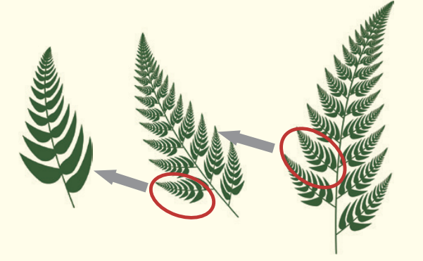

Fractals (\(\pm\))
A fractal is a structure that has the property of self-similarity. This means that the exact same shape repeatedly appears at smaller and smaller scales.

Fractal patterns can look very complicated at first glance, but they are actually created by repeating simple rules again and again.
Fractals come from geometry, but the same ideas can also be used to study patterns in things like stock prices, changes in currency values, and the way social groups are organised.
Many examples of fractals can also be found in the natural world. Examples include snowflakes, seashells (such as turban shells and nautiluses), the shapes of cumulonimbus clouds, and the circulatory system in the human body (including the heart, blood vessels, and lymphatic vessels).
Build a fractal fern yourself
In the app below you can visualise the construction of a fractal fern pattern. In the simulation there are just four simple rules, each applied at random with its own fixed probability. No fern shape is ever instructed. Instead, it emerges purely from repeating those four rules tens of thousands of times.
The simulation has some parameters. If you adjust these you can see how the final pattern depends sensitively on the rules.
See the raw numbers these four knobs produce
Building a pattern from first principles
If you’re curious how the simulation above works, here’s the same idea unpacked in two simpler steps, starting with just one point and one rule.
A rule takes a point (x, y) and maps it to a new point (x′, y′) = (a·x + b·y + e, c·x + d·y + f). That’s it – six numbers, one point in, one point out. Try the sliders, then press “Apply this rule again” to feed the new point back into the same rule, and watch where it goes next.
Extra: Sierpinski’s triangle
Fractals don’t use one fixed rule – they repeat a simple recipe, over and over: start at any point; pick one of the triangle’s three corners at random, each equally likely; move the current point exactly halfway towards that corner, and plot the new point; then repeat, tens of thousands of times. Do that, and out comes the famous Sierpinski triangle.
(This “halfway to a random corner” trick is special to the triangle – try it on a square and you just get a solidly filled square, not a fractal. The fern further up the page gets its fractal structure a different way, using rules that rotate and stretch as well as shrink.)